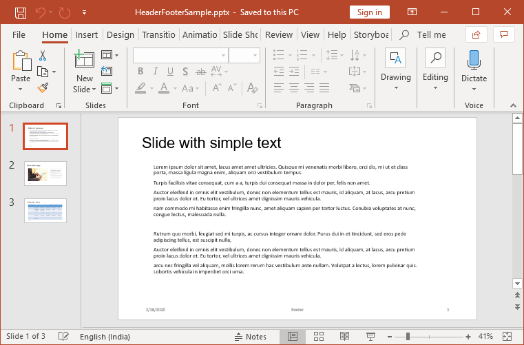

Essential Presentation library has support for inserting, editing and removing header and footer in a PowerPoint presentation.
This sample demonstrates how to insert the header and footer in a PowerPoint presentation.
Features:
Note: This library supports inserting, editing, removing, and converting of header footer for .pptx format alone.
The following is the screenshot of output presentation generated by Essential Presentation.
